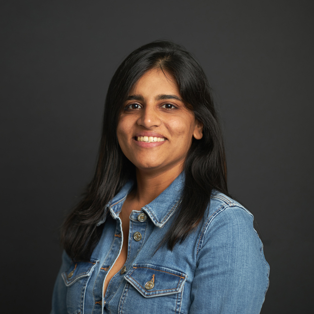

Khurana, A. (in press). From fragmentation to cohesion: A narrative review of system-level inclusive education reforms. Journal of Special Education Leadership.
Ph.D. · Curriculum, Instruction & Educational Leadership · Boston College
Reimagining education systems so every learner belongs.
I am a researcher of inclusive education studying how schools and systems transform through equity-centered leadership, Universal Design for Learning, and research–practice partnerships that turn evidence into everyday practice for students with disabilities.
0Publications
0Conference talks
0Awards & fellowships
0Countries presented in

01
About me
I began my career in New Delhi classrooms as a special educator, and quickly learned that even the most devoted teacher cannot out-teach a system that wasn't designed for all of its learners. That realization has shaped everything since.
I hold a Ph.D. in Curriculum and Instruction (and Educational Leadership) from the Lynch School of Education and Human Development, Boston College, where my dissertation, a realist evaluation of inclusive education reform in the Archdiocese of Milwaukee, examined why some Catholic schools more successfully enroll and include students with disabilities, identifying the system-level conditions of moral authorization and organizational capacity that sustain inclusive practice.
Before my doctorate, I led assessment research at the ASER Centre, Pratham Education Foundation, designing the UDL-grounded Assessment for All tool to evaluate learning for children with disabilities across 16 regional languages, and building national instruments used in 13 low- and middle-income countries. At Boston College, I spent three years in a research–practice partnership with Boston Public Schools, co-developing a Theory of Action and practitioner tools that guide school teams in reforming special education service delivery.
Across all of it runs one question: how do education systems, not just individual classrooms, become genuinely inclusive, and stay that way?
Research journey
-
2018 – 2021
Research (Assessment) Associate, ASER Centre, Pratham Education Foundation
Led the design of the Assessment for All tool for children with disabilities in 16 languages; developed the ASER 2019 and KIX+ national assessment instruments used across 13 countries.
-
2022 – 2025
Research–Practice Partnership, Boston Public Schools
Partnered with district administrators to refine a Theory of Action for inclusion; co-developed an inclusion planning guidebook, evaluation tool, and classroom observation instruments; supported inclusion-coach professional development.
-
2025 – 2026
Dissertation: Realist Evaluation of Inclusive Education Reform
Studied the Archdiocese of Milwaukee's inclusive education reform to explain what works, for whom, and under what conditions, surfacing the mechanisms that make inclusion stick in school systems.
02
Publications
Peer-reviewed scholarship on inclusive education reform, UDL, and equity-centered leadership. Full list in my CV and on Google Scholar.
Scanlan, M., Khurana, A., Martin, T., & Mendenez, C. (in press). Mentoring coaches toward communities of practice advancing inclusion. International Journal of Mentoring and Coaching in Education.
Khurana, A. (2022). Converting physical spaces into learning spaces: Integrating universal design and universal design for learning. Frontiers in Education, 7, Article 965818. https://doi.org/10.3389/feduc.2022.965818
Mountford, M., Wallace, L. E., & Khurana, A. (in press). Wicked problems: Conceptual foundations and contemporary significance. In M. Mountford & L. E. Wallace (Eds.), School boards and superintendents: Navigating a wicked terrain (Research on the Superintendency Series, Vol. 3). Information Age Publishing.
Mountford, M., Wallace, L. E., & Khurana, A. (in press). Wicked is as wicked does. In M. Mountford & L. E. Wallace (Eds.), School boards and superintendents: Navigating a wicked terrain (Research on the Superintendency Series, Vol. 3). Information Age Publishing.
Mountford, M., Wallace, L. E., & Khurana, A. (in press). No rest from the wicked. In M. Mountford & L. E. Wallace (Eds.), School boards and superintendents: Navigating a wicked terrain (Research on the Superintendency Series, Vol. 3). Information Age Publishing.
Khurana, A., & Scanlan, M. (2025). Reforming special education service delivery in Boston Public Schools with research-practice partnership. In K. Zenkov, D. Polly, & L. Rudder (Eds.), Boundary-spanning in school-university partnerships. Information Age Publishing.
Khurana, A., Scanlan, M., Bott, J., & d'Ablemont Burnes, E. (2023). Research–practice partnership to reform special education service delivery in Boston Public Schools. In J. Barnes, M. J. Stevens, B. Z. Ekelund, & K. Perham-Lippman (Eds.), Inclusive leadership: Equity and belonging in our communities (pp. 107–120). Emerald Publishing. https://doi.org/10.1108/S2058-880120230000009010
Dalton, E. M., Jackson, R. M., Bracken, S., Satar, A. A., Aabi, M., Khurana, A., Nicholas, L., Power, O. K., & Plantin Ewe, L. (2023). Creating an international collaboratory for leadership in universally designed education: INCLUDE as a global community of practice. In K. Koreeda, M. Tsuge, S. Ikuta, E. M. Dalton, & L. Plantin Ewe (Eds.), Building inclusive education in K-12 classrooms and higher education: Theories and principles (pp. 1–20). IGI Global. https://doi.org/10.4018/978-1-6684-7370-2.ch001
Khurana, A. (2019). UDL practices in India: Paving a path from equality to equity in learning. In S. L. Gronseth & E. M. Dalton (Eds.), Universal access through inclusive instructional design: International perspectives on UDL (pp. 103–110). Routledge.
Khurana, A. (2026, April). Transforming systems for inclusion: Advancing reform for students with disabilities [Paper presentation]. American Educational Research Association (AERA) Annual Meeting, Los Angeles, CA, United States.
Khurana, A. (2026, January). What makes inclusion "sticky"? Unpacking system-level conditions for sustained reform in Catholic schools [Paper presentation]. International Congress for School Effectiveness and Improvement (ICSEI), Doha, Qatar.
Khurana, A. (2026, March). Beyond isolated practices: A systemic four-part framework for inclusive education reform [Poster presentation]. Council for Exceptional Children Annual Conference, Salt Lake City, UT, United States.
Khurana, A. (2025, November). Leading inclusive reform: Building resilience through collaboration and community [Paper presentation]. Graduate Student Symposium, University Council for Educational Administration (UCEA) Annual Convention, San Juan, Puerto Rico.
Scanlan, M., & Khurana, A. (2024, April). A research-practice partnership for dismantling social injustices and advancing organizational transformation for inclusive education [Paper presentation]. AERA Annual Meeting, Philadelphia, PA, United States.
Dalton, E., & Khurana, A. (2020). Making assessments inclusive. In D. Schmidt-Crawford (Ed.), Proceedings of Society for Information Technology & Teacher Education International Conference (pp. 1975–1979). AACE.
Khurana, A., & Apoorva, P. (2019). Relearning of the teachers: Effect of training in Universal Design for Learning on teacher's knowledge and skills and learners' achievement. In Proceedings of Society for Information Technology & Teacher Education International Conference (pp. 1471–1481). AACE.
Dalton, E., Gronseth, S., Anderson, C., Anderson, K., & Khurana, A. (2019). Inclusive instructional design efforts around the world. In K. Graziano (Ed.), Proceedings of Society for Information Technology & Teacher Education International Conference (pp. 2579–2581). AACE.
+ 15 more peer-reviewed papers, posters, and symposia at AERA, UCEA, ICSEI, CEC, NEERO, CIES, and ICEQ (2019–2026). See the full CV.
Dyer, C., Bhattacharjea, S., Ramanujan, P., Khurana, A., & Alcott, B. (2023). Continuity, discontinuity, and progression in the early years' numeracy curriculum in India. Ideas for India.
Khurana, A. (2020, June 1). E-learning challenges in India. International Collaboratory for Leadership in Universally Designed Education (INCLUDE) Blog.
Flood, M. (Host). (2022, May 25). Episode 9: Talking flexible learning spaces with Aashna Khurana [Audio podcast episode]. In Talking about all things inclusion.
03
Teaching
A decade of teaching across two continents, from elementary classrooms in New Delhi to graduate seminars in Boston.
University teaching
Teaching Fellow, EDUC7438: Educating Children with Disabilities
Lynch School of Education and Human Development, Boston College
Facilitated seminars, developed course materials, and mentored graduate students in special education theory and practice.
Guest Lecturer, T560: Universal Design for Learning: Theory, Practice, and Innovation
Harvard Graduate School of Education
Invited annually to lecture on UDL in international and systems-change contexts.
Guest Lecturer, Instructional Technology & Society
University of Houston, College of Education
Lectured on inclusive instructional design and technology for diverse learners.
Guest Lecturer, Developing Leadership Capacity Through Reflective Practice
Royal Roads University, Victoria, Canada
Taught reflective practice approaches for building equitable leadership capacity.
K–12 teaching
Special Educator
DAV Public School, New Delhi, India
Supported students with disabilities through individualized instruction and inclusive classroom practices.
Elementary Educator
Kendriya Vidyalaya (Central School of India), New Delhi, India
Taught elementary learners in one of India's largest public school systems.
04
Awards & fellowships
David L. Clark Scholar
Competitive national fellowship for emerging scholars in educational leadership. Sponsored by UCEA and AERA Divisions A & L.
Roche Center Research Fellowship
$5,000 fellowship with research travel support for scholarship on Catholic schools. Lynch School of Education, Boston College.
Jackson Scholar, UCEA
Recognizes doctoral students advancing equity-focused educational research.
UCEA Graduate Student Fellowship
Collaborative fellowship with the UCEA Joint Program Center for the Study of the Superintendency & District Governance.
ICSEI Junior Scholar Fellowship
Recognizing emerging scholars in educational research, from the International Congress for School Effectiveness and Improvement.
Doctoral Student Research Fund
Lynch School of Education research stipend supporting dissertation research and travel.
Researcher Development Program Fellow
UCEA–AERA Leadership for School Improvement SIG program for developing researchers.
Best Paper Nomination, NEERO
For "System Efforts to Reform Special Education Service Delivery in Boston Public Schools."
Inclusive Learning Network Award, ISTE
Honored by the International Society for Technology in Education PLN for contributions to inclusive learning practices.
05
Professional associations & service
Boston College✦
AERA✦
UCEA✦
ICSEI✦
InCLUDE✦
Pratham Education Foundation✦
CAST✦
SITE
- Co-Chair
Generational Renewal, Inclusion and Diversity (GRID) Committee, ICSEI
2025 – present - Co-Chair
Division A Connect Series, American Educational Research Association (AERA)
2025 – present - Consultant
Pratham Education Foundation
2024 – present - Representative
Graduate Student Representative, Leadership for School Improvement SIG, AERA & Researcher Development Program, UCEA
2023 – 2025 - Steering
Steering Committee Member, InCLUDE (International Collaboratory for Leadership in Universally Designed Education)
2019 – 2025 - Intern
UDL Summer Intern, Center for Applied Special Technology (CAST)
2022 - Co-Chair
SITE Universal Design for Learning (UDL) Special Interest Group
2021 – 2023
Let's connect
Working toward schools
where everyone belongs?
So am I.
I'm always glad to talk about inclusive education research, collaborations, speaking, or consulting.